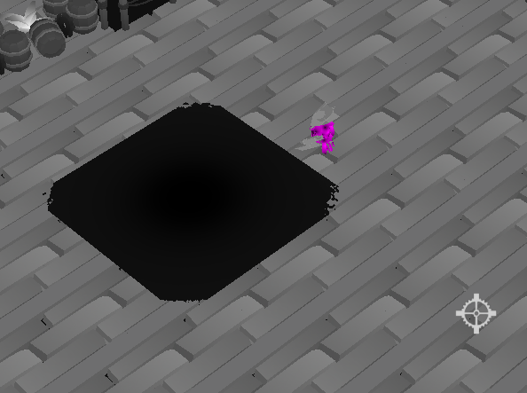

Beak noir
Quick info
Engine:
TGE (School provided Engine)
Focus:
contributions
*i ported my particle system from P3 and added more funcionality
*i worked on the movement to make the player walk along the walls instead of getting stuck
Rendering & Alpha
I worked a lot on things that weren't
visible—literally. We had issues with alpha
rendering: when
using fake shadows, background objects were cut off regardless of whether they were in front
of or
behind the alpha object.
This was related to render order. To fix it, I attempted to sort all game objects based on
their
distance from the camera. This gave a somewhat decent result, except that the sorting
sometimes
failed and the issue reappeared in certain cases.

It also hurt performance, since sorting was done
every frame for all objects, making Debug mode unplayable.
I solved this by implementing a crude view culling system that treated all objects as equally sized
squares on the screen. This meant the square size had to be larger than the largest object, even for
smaller models. Despite that, we gained 15 FPS (from 10 to 25) in Debug, which made it worthwhile.
I ultimately solved alpha rendering by letting our game artist to tag all drop-shadows/lights and
rendering them last in TGE. This made my sorting solution completely unnecessary, so it was removed.
Particle System
Adapting the system from my previous project to be able to load particle systems from JSON
turned out to be a significant waste
of time, as no one felt they had time to implement particle
systems.
As a result, I was mostly the one creating and adjusting them. The JSON
loading
also added extra work. It was faster and easier to hardcode the particle system settings
directly in the source files, which also overrode the JSON settings.
Despite this, I'm happy with the result. I learned how to use and handle JSON loading, which I hadn't done before. Writing the documentation for my particle system also helped me discover bugs in my code, which I was then able to fix.